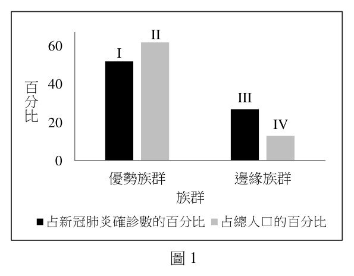
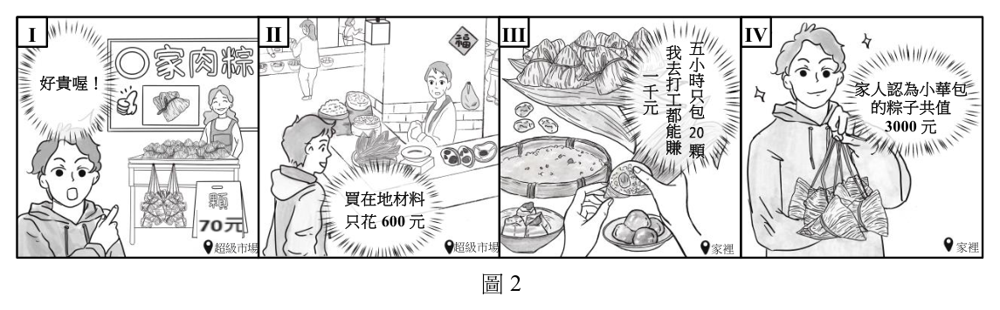
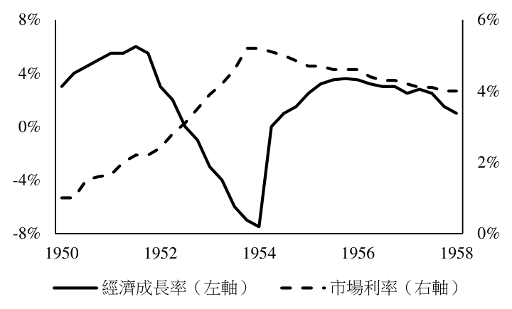
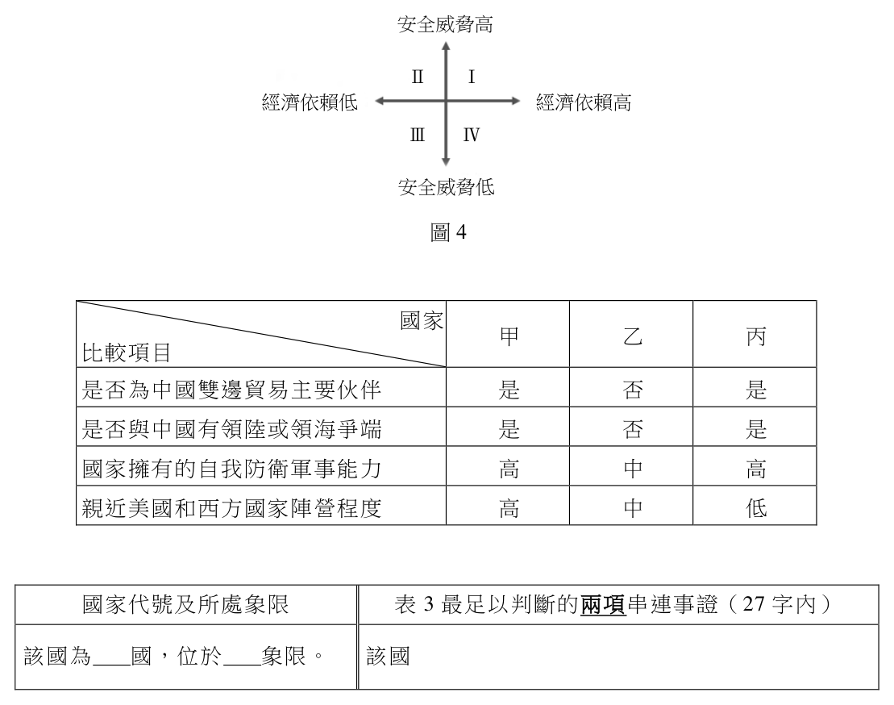

開卷有益 ／
分科測驗 ／ 公民與社會 ／ 113 年113 年分科測驗公民與社會試題與答案
這一頁是民國 113 年分科測驗公民與社會的整份歷屆試題，共 42 題，題目與標準答案出自大考中心 分科測驗歷年試題（依著作權法 §9，考試試題不受著作權保護），其中 42 題附有詳解。以下逐題列出題幹、選項與答案；要計時作答或記錄成績，請用線上練習。
大學入學考試中心原始場次代碼：分科公民與社會
線上作答這一科 →
全部 42 題
第 1 題
某國研究指出:障礙兒童就學期間鮮少參與畢業旅行,因為學校規劃畢旅時,常習慣性
略過討論障礙兒童需要的支持措施,而障礙兒童也少有參與意願。從社會規範之作用來
檢視此現象,下列敘述何者最適切?
（A） 將障礙兒童的不願參與視為理所當然,將限縮其自我發展（B） 校方未能輔導障礙兒童提升人際互動之自信心,顯有失職（C） 若校方強迫障礙兒童須參加畢旅,反而未能尊重其自主性（D） 學校未提供畢業旅行替代選項,已構成對障礙兒童的歧視答案：（A）
詳解與考點 正解：題幹的「習慣性略過支持措施」使障礙兒童的不參與被看成理所當然；這種社會規範並非中立選擇，而會降低其可參與的機會並限縮自我發展，因此（A）最適切，故選 A。
B：題文指出的是學校規劃時未納入支持措施，不能直接推論核心問題是障礙兒童缺乏人際互動自信或校方未加輔導。
C：是否尊重自主性要先區分選擇是否在可近用的條件下作出。題幹中的不參與受到制度性排除影響，將問題化約為不能強迫參加，沒有回應規範造成的障礙。
D：題文沒有提供學校未設替代選項的資訊；缺乏支持措施可能造成不平等，但不能據此直接斷定選項所述的特定事實。
本題考點：社會規範（social norm）——判斷規範效果時，看哪些行為被視為理所當然、因而排除誰的參與；平等參與（equal participation）——表面的自願缺席若由環境障礙造成，需先檢查支持條件是否被提供。
第 2 題
對於疫情如何影響社會,有兩種不同觀點。甲觀點主張:疫情影響廣、且無人倖免,所以
是「公平」的;乙觀點則認為疫情的影響
II 程度,會因個人所處的社會、經濟地位而 60 I
有不同。圖1 是某國有關不同族群的疫情
數據。請問下列有關該資料的解釋敘述, 百 40
分 III
何者最正確? 比
20 IV

（A） 支持甲觀點,因I大於III（B） 支持乙觀點,因II大於III 0
優勢族群 邊緣族群（C） 支持甲觀點,因I小於II
族群 圖1（D） 支持乙觀點,因III大於IV
占新冠肺炎確診數的百分比 占總人口的百分比
圖1答案：（D）
詳解與考點 正解：判準不是比較兩族群的絕對人數，而是各族群「占確診數的百分比」是否與「占總人口的百分比」相稱。圖中邊緣族群的（III）占確診數百分比大於（IV）占總人口百分比，表示其承受的疫情負擔高於人口占比，支持乙觀點所說的社會經濟地位會造成不同影響。因此（D）支持乙觀點，故選 D。
A：比較（I）與（III）是在比較不同族群的數值，沒有以各自人口基數校正，不能判定疫情是否公平。
B：（II）與（III）分屬不同族群與不同指標，不能用它們的大小直接判定某一族群是否遭受不成比例的風險。
C：即使（I）小於（II），也表示優勢族群的確診占比低於其人口占比；這與邊緣族群負擔偏高合看，反而不支持疫情影響公平。
本題考點：比例比較（proportional comparison）——比較群體受影響程度時，要以群體人口占比作基準；健康不平等（health inequality）——若邊緣族群的疾病或風險占比高於其人口占比，代表影響並非平均分配；統計指標（statistical indicator）——先確認每個數字的分母，避免以不同分母的百分比直接比較。
第 3 題
有學者想了解就讀不同類型大學之學生政治參與度,並進一步分析其對高等教育政策
的啟示。表1 為該學者的調查結果,依據表1 資料,下列哪項分析最適切?
表1
政治參與度(%)
就讀的大學類型 總和
低 中 高
公立一般大學 2.5 39.8 57.7 100
私立一般大學 4.7 41.1 54.2 100
公立技職大學 6.9 58.7 34.4 100
私立技職大學 8.1 67.3 24.6 100
公立一般大學 2.5 39.8 57.7 100 私立一般大學 4.7 41.1 54.2 100 公立技職大學 6.9 58.7 34.4 100 私立技職大學 8.1 67.3 24.6 100
（A） 公立大學學生政治參與度較私立大學高,凸顯出高等教育並未能促進政治平等（B） 一般大學比技職大學學生政治參與度較高,這是高等教育資源分配不均的結果（C） 私立大學學生的政治參與度都較低,顯見私立大學學費負擔過重造成負面影響（D） 技職大學學生的政治參與度都較低,反映技職大學宜強化民主公民養成之規劃答案：（D）
詳解與考點 正解：表1中兩類一般大學的高政治參與度分別為57.7%與54.2%，都高於兩類技職大學的34.4%與24.6%；技職大學的低參與比例也較高。資料可支持（D）技職大學學生的政治參與度相對較低，並據此提出強化民主公民養成的規劃，故選 D。
A：表中沒有各類大學的整體加權資料，不能直接概括公立大學一定比私立大學高；更不能由此單一表格推出高等教育未促進政治平等。
B：一般大學與技職大學的差異確實存在，但調查資料只呈現關聯，沒有測量教育資源分配，不能把差異斷言為資源不均造成。
C：私立一般大學的高參與比例為54.2%，高於兩類技職大學，故「私立大學都較低」與表格不符；學費負擔的因果說法也沒有資料支持。
本題考點：描述統計（descriptive statistics）——先逐列比較同一指標，再下與表格一致的描述；相關不等於因果（correlation does not imply causation）——未測量的教育資源或學費不能由群體差異直接判為原因；政策推論（policy inference）——資料指出特定群體的需求時，可提出改善方向，但要避免把未證明的原因寫成定論。
第 4 題
我國障礙者依法可向政府申請補助,僱用助理協助生活。小天提出申請,政府依據既有
預算額度及權限,核定部分而非足額補助。小天認為這違反身心障礙者權利公約,因該
公約要求政府應保障身心障礙者自立生活。依據我國法律體系,對本案政府作為的評論,
下列何者最適當?
（A） 政府核定補助應依既有預算額度及權限,而非依國際人權公約（B） 依該公約施行法精神,政府應盡量補助讓小天能夠自立之費用（C） 須經國際專家建議,政府才應補助讓小天足以自立生活之費用（D） 基於個人自我負責理念,政府不應該補助小天之自立生活費用答案：（B）
詳解與考點 正解：本題問的是已透過施行法納入國內法體系的人權公約如何影響行政決定。公約要求保障身心障礙者自立生活，既有預算與權限雖會影響一次能做到的程度，卻不是忽略此目標的理由；（B）由施行法精神出發，要求政府盡量補助使其能自立的必要費用，最為適當，故選 B。
A：預算與權限是行政執行的限制，不是國際人權公約與其施行法完全不適用的理由；兩者應一併納入判斷。
C：政府落實公約義務不以國際專家提出建議為前提，行政機關本就應依國內法秩序推進保障措施。
D：個人自我負責不能排除政府對身心障礙者提供合理支持、促進自立生活的積極義務。
本題考點：人權公約國內化（domestication of human-rights treaties）——有施行法的公約內容應成為行政作為的解釋與推動方向；積極權利保障（positive obligation）——判斷社會權案件時，區分政府應朝目標逐步實現的義務，與個案能否主張特定給付的範圍。
第 5 題
某公司與甲簽訂業務員工作契約,並要求甲同意接受切結書約束。切結書要求,甲在工作
期間不得無故拒絕加班。針對該切結書的權利義務關係,下列敘述何者正確?
（A） 切結書不屬甲與公司簽訂之勞動契約內容,不會發生法律效果（B） 為避免雇主欺壓勞工,勞動契約不應該限制勞工在職時的行為（C） 依據私法自治原則,甲須受到該切結書的拘束且不得表示反對（D） 甲如果認為切結書內容不當,可依據勞資爭議處理法請求調解答案：（D）
詳解與考點 正解：關鍵在切結書涉及甲與公司間的工作條件，若甲認為加班約定不當，爭點屬於勞資關係中的權利義務爭議；（D）得依勞資爭議處理機制請求調解，提供了適當的處理途徑，故選 D。
A：切結書如經雙方合意並作為工作條件，原則上可能成為勞動契約內容；是否有效仍須受強制規定與公平性檢驗，不能說必然沒有法律效果。
B：勞動契約可以規範在職時的工作義務，界限在於不得違反強制規定或不當侵害勞工權益，不是一概不得限制。
C：私法自治容許締約與協商，不等於甲不得表示異議或尋求調解；勞動關係同時受到保護勞工的強制規範限制。
本題考點：勞動契約（labor contract）——約定工作條件時，要同時判斷雙方合意與是否牴觸強制保護規範；勞資爭議調解（labor dispute mediation）——對勞動關係的權利義務有爭議時，可先透過調解尋求處理。
第 6 題
有廠商因違反管制藥品管理條例之相關規定,遭衛生福利部裁罰。該廠商認為裁罰違法,
乃提起行政救濟。依據現行法律規定,下列何者是該廠商提出行政救濟的正確途徑?
（A） 先向行政院提起訴願,被駁回後再向高等行政法院提起行政訴訟（B） 先向高等行政法院提起訴訟,如果敗訴再上訴最高法院或大法庭（C） 先向行政院提起訴願,如遭駁回再向最高行政法院提起行政訴訟（D） 先向高等法院提起訴訟,如敗訴後向高等行政法院提起行政訴訟答案：（A）
詳解與考點 正解：衛生福利部的裁罰是行政處分，廠商主張違法時，須先循訴願程序救濟。對中央部會處分提起訴願的上級機關是行政院；（A）先向行政院訴願，遭駁回後再向高等行政法院提起行政訴訟，符合題示的救濟層次，故選 A。
B：此途徑跳過訴願程序，且高等行政法院的一審救濟也不是直接向最高法院或大法庭提起。
C：最高行政法院不是本案提起行政訴訟時的第一審法院，不能在訴願駁回後直接向它起訴。
D：高等法院處理的是普通法院體系的案件；對行政機關裁罰不服，應進入行政救濟與行政法院體系。
本題考點：行政處分（administrative act）——行政機關對特定人民作成具有法律效果的單方決定時，先辨識其是否屬行政處分；行政救濟（administrative remedies）——不服中央機關處分時，依訴願與行政訴訟的法定層級循序尋求救濟。
第 7 題
某國一個少數族群音樂團體,經過激烈競爭,獲得該國政府頒發音樂界最高獎項,發表
以下感言:「感謝這個獎項支持多元族群文化;在這片多元、自由和民主的創作沃土,
不但讓許多的『我』,可以是不同的『我』,也讓許多的『我』,願意在這個國家成為
『我們』」。從國家政策及其影響的角度,該團體的感言與下列哪項論述最吻合?
（A） 鼓勵多元文化自由競爭的國家政策,有利於文化創新發展（B） 肯認不同族群文化的國家政策,最能滋養多元創作的沃土（C） 文化的多元認同與國家政策關係密切,後者能夠促成前者（D） 多元文化與自由民主息息相關,兩者皆仰賴國家政策支持答案：（C）
詳解與考點 正解：感言先肯定支持多元族群文化的政策，接著指出許多不同的「我」得以存在，又願意共同成為「我們」。這同時呈現國家政策對族群文化認同與共同國家認同的促成作用；（C）最完整概括兩層意思，故選 C。
A：此項只談多元文化的自由競爭與文化創新，沒有掌握感言中「不同的我」與「成為我們」所指的認同形成。
B：肯認族群文化確能支持創作，但此項只停在創作沃土，未說明政策如何連結多元認同與共同體認同。
D：此項把多元文化與自由民主都概括為仰賴國家政策，因果範圍過大；題幹著重的是政策對文化認同及共同歸屬的影響。
本題考點：多元文化主義（multiculturalism）——辨識政策是否承認並支持不同族群的文化表達；國家認同（national identity）——當材料同時談差異被承認與共同歸屬時，要判斷兩者如何由公共政策連結。
第 8 題
小艾擔任高中學生會會長,根據相關規定,她得以學生會會長身分,出席校務會議為學生
發聲,並擁有表決權。小艾認為這些規定和實踐,展現校園民主精神,因此從未缺席且
積極參與。前述校園民主的實踐,與下列哪項政府落實民主治理的理念最相近?
（A） 政府機關應對公投案提出意見書,告知人民通過與否的法律效果（B） 政府計畫在某地興建焚化爐前,於該地舉辦公聽會聽取居民意見（C） 主管機關建置大專校院校務資訊公開平臺,公布各校新生註冊率（D） 地方行政首長須定期到議會作施政報告,並接受議員的監督質詢答案：（B）
詳解與考點 正解：小艾以學生代表身分進入正式校務決策並擁有表決權，核心是受影響者參與公共事務的形成；（B）政府興建焚化爐前舉辦公聽會，讓當地居民在決策前表達意見，最接近此一參與治理精神，故選 B。
A：政府提出公投意見書是提供資訊與法律效果說明，人民沒有因此直接參與機關的決策形成。
C：公開校務資訊屬透明與資訊公開，重點是讓外界取得資料，不是讓利害關係人參與決定。
D：行政首長到議會報告並受質詢屬民意機關監督行政權，與學生或居民以利害關係人身分參與決策不同。
本題考點：參與式民主（participatory democracy）——判斷重點是人民或利害關係人是否能在公共決策形成時表達意見或參與；資訊公開（government transparency）——資料可取得不等於已取得參與決策的權力。
第 9 題
甲、乙兩國為兩黨制的民主國家,其政治體制一為內閣制,另一為總統制;且兩國歷次
國會大選皆有一黨獲得過半數席次。在體制運作上,甲國政府經常遭批濫權,乙國則常
出現政府運作僵局。依據題文,下列何者最符合甲國或乙國的體制特徵?
（A） 甲國總統得否決國會通過的法案（B） 甲國總統公布法令皆須閣揆副署（C） 乙國內閣閣員須由國會議員兼任（D） 乙國內閣閣員須至國會接受質詢答案：（B）
詳解與考點 正解：甲國常被批評濫權，較符合內閣制下多數黨同時掌握國會與內閣、權力較易集中的情況；乙國常陷入僵局，較符合總統制的行政與立法分立。內閣制中，國家元首公布法令通常由內閣總理副署負責政治責任；（B）因此符合甲國特徵，故選 B。
A：總統否決國會法案是總統制行政與立法互相制衡的典型權限，較應對應乙國而非甲國。
C：內閣閣員由國會議員兼任是內閣制的可能特徵，不是總統制下乙國的必然設計。
D：內閣成員到國會接受質詢反映內閣對國會負責，屬內閣制的責任政治，不應列為乙國的總統制特徵。
本題考點：內閣制（parliamentary system）——判斷時看內閣是否由國會多數支持並對國會負責；總統制（presidential system）——行政與立法分立時，兩部門可能因政治立場不同而產生僵局；副署制度（countersignature）——國家元首的形式行為由內閣首長副署時，政治責任由內閣承擔。
第 10 題
表2 是我國某年村里長選舉的統計資料,若根據此表推論該年村里長選舉的競爭情況,
下列何者最適當?
表2
各參選人數的村里數(%)統計 各政黨的當選人數(%)統計
參選人數 村里數(%) 政黨名稱 當選人數(%)
一人 2,588(33.2) 中國國民黨 1,221(15.8)
二人 3,675(47.1) 民主進步黨 285( 3.7)
三人 1,143(14.7) 其他政黨 8( 0.1)
四人以上 389( 5.0) 無黨籍 6,230(80.4)
參選人數 村里數(%) 政黨名稱 當選人數(%) 一人 2,588(33.2) 中國國民黨 1,221(15.8) 二人 3,675(47.1) 民主進步黨 285( 3.7) 三人 1,143(14.7) 其他政黨 8( 0.1)
（A） 各村里普遍競爭激烈,主因是派系惡鬥而非政黨競爭（B） 在二人參選的村里,主要是兩大黨的候選人相互競爭（C） 在多數村里,政黨不是影響選民投票對象的關鍵因素（D） 村里長與區域立委選舉同為單一選區,政黨競爭類似答案：（C）
詳解與考點 正解：表2的兩組資料要合併看。村里長當選人有80.4%為無黨籍，遠高於各政黨；再加上33.2%的村里只有1人參選，可知村里層級選舉未必以政黨身分作為主要投票線索。故最適當的推論是（C）在多數村里，政黨不是影響選民投票對象的關鍵因素，故選 C。
A：只有1人參選的村里已占三分之一，不能說各村里普遍競爭激烈；表中也沒有派系衝突資料，不能把競爭原因推成派系惡鬥。
B：二人參選只說明候選人數，沒有交代兩人的政黨身分。以所有當選人的政黨分布倒推每一個二人選區的競爭組合，證據不足。
D：雖然兩者都採單一選區，但村里長選舉的無黨籍當選比例極高，和區域立委常見的政黨競爭結構不同；選制形式相同不表示政黨競爭相似。
本題考點：選舉資料判讀（electoral data interpretation）——先辨認資料的統計單位，再確認結論沒有跨越資料可支持的範圍；政黨認同（party identification）——無黨籍比例極高時，不能直接把地方選舉理解成兩大黨競爭；相關與推論範圍（scope of inference）——候選人數不能自行推出候選人的政黨組成或競爭成因。
第 11 題
某國有數家油品供應商組成協會,該協會定期公告一致的汽柴油售價,被該國政府認定
為影響油品市場而依法開罰。下列何者亦可能因相同的理由被該國政府判定違法?
（A） 水泥業者互設監視器查核出貨數量及地點,以控制產品供應（B） 疫情期間有廠商囤積口罩及酒精等防疫用品,試圖哄抬價格（C） 廠商於廣告謊稱產品獲得多國專利權的認證,擴大銷售市場（D） 地緣戰爭油價大漲,航空業者於旅遊旺季紛紛調漲機票價格答案：（A）
詳解與考點 正解：油品供應商定期公告一致售價，是同業協調價格以減少競爭的行為。水泥業者互設監視器查核出貨數量與地點，目的是共同控制產品供應，也屬同業間限制競爭的協調，因此（A）最可能因相同理由違法，故選 A。
B：囤積防疫用品並哄抬價格可能涉及個別業者的價格操縱或不當交易，但題幹沒有顯示同業間共同協議價格或供應量。
C：廣告謊稱取得專利是虛偽不實廣告，問題在資訊欺罔，不是競爭者彼此協調市場行為。
D：地緣戰爭造成油價上漲後，各航空業者調高票價可能是共同成本壓力下的平行反應；沒有同業協議的證據，不能直接等同聯合行為。
本題考點：聯合行為（concerted practice）——同業若共同訂價、限量或分配市場，先判為限制競爭；平行行為（parallel conduct）——業者作出相同調整時，仍要檢查是否有協議或共同控制的證據。
研究顯示,區域內的工會密度(勞工參與工會的比率),和該區域內全體人口的生活 水準與生活經驗息息相關。相較於工會密度低的區域,工會密度高的區域有以下特徵: (1)最低工資水準較高;(2)家庭收入中位數較高;(3)勞工失業時可獲得較高的 給付;(4)投票率高;(5)合法遊行運動申請較多。此外,也有專家觀察到,政黨為 爭取選民支持,積極參與該區域工會的勞工運動,因而提醒:工會運作應注意不受政黨 與資方影響,維持自身自主性。請問:
第 12 題
下列有關工會體制影響力的敘述,何者最能反映題文所描述的現象?
（A） 工會越能爭取勞工權益,越能影響勞工的投票支持對象（B） 工會存在的目的,係為保障生產力較低落的弱勢勞動者（C） 工會參與度愈大愈有影響力,可提升個人與公眾的福祉（D） 工會提供反制與對抗的手段,有助政黨政治的蓬勃發展答案：（C）
詳解與考點 正解：題文比較的是工會密度較高地區的薪資、家庭收入、失業給付、投票率與合法遊行等指標；這些個人與公共生活指標同時較高，最接近（C），故選 C。但材料只支持工會密度與福祉指標相伴，不能單獨證明工會參與必然造成福祉提升。
A：題文只提到投票率較高，沒有指出工會爭取權益會使勞工改變支持哪一個投票對象，推論超出材料。
B：工會的功能是集體協商與維護勞動權益，不以保障生產力較低的勞動者為存在目的；這種說法把工會功能過度限縮。
D：工會可作為勞工反制與集體行動的力量，但題文重點是生活水準、社會參與與自主性，不能直接推成政黨政治必然更蓬勃。
本題考點：工會密度（union density）——從勞工參與比例連結集體協商與社會參與的可能影響；相關與因果——材料呈現指標同時變動時，先寫相伴關係，不把它直接改寫成單向因果；公眾福祉（public welfare）——材料同時呈現勞動條件與公共參與時，判斷效果是否超出個人層次。
第 13 題
依據題文,該專家最可能支持工會採取下列哪個政治參與的立場?
（A） 工會透過勞工運動影響政黨政策偏好,擴大勞工政治參與（B） 工會應致力舉辦遊行以彰顯自身自主性,並爭取勞方權益（C） 工會與政黨如果運動的目標一致時,即可接受政黨的領導（D） 工會是壓力團體,應自行提名候選人參與選舉來實現目標答案：（A）
詳解與考點 正解：專家主張工會不受政黨與資方影響、維持自主性，並不表示工會必須退出政治，而是應以自身勞工訴求影響政黨政策。（A）由工會主動透過勞工運動影響政黨偏好，仍由工會決定目標與方向，最符合此立場，故選 A。
B：舉辦遊行可以是政治參與方式，但是否遊行本身不能保證自主性，也沒有說明如何避免受政黨或資方影響。
C：即使目標一致，接受政黨領導仍把工會的決策主導權交給政黨，與題文要求維持自身自主性相牴觸。
D：壓力團體通常以組織行動影響政策，而非自行提名候選人參選；後者會使組織角色轉向政黨，並非題文所述的工會政治參與方式。
本題考點：工會自主性（union autonomy）——判斷工會政治參與時，看議程與決策是否仍由工會自主掌握；壓力團體（pressure group）——以影響政策為主而非自行取得選舉職位，據此與政黨區分。
圖2 依序為小華去超級市場買材料,回家包粽子給家人吃的過程。請問: I II III IV
我 五
去 小 一 時 好貴喔! 打 家人認為小華包 千 只 工 元 都 包 的粽子共值 能 3000 元
賺 顆
買在地材料
只花600 元
超級市場 超級市場 家裡 家裡
圖2
第 14 題
根據圖2,小華的行為增加該國當年多少GDP?

（A） 600元（B） 1,400元（C） 1,600元（D） 3,000元答案：（A）
詳解與考點 正解：GDP計入的是市場上新生產的最終商品與服務價值。小華購買在地材料花費600元，是透過超級市場完成的市場交易；回家為家人包粽子沒有另外出售，家人認為粽子值3,000元也不是市場交易。因此本題增加的GDP為（A）600元，故選 A。
B：1,400元並非題幹中的一筆市場產出。把自製食物的主觀價值、未實現的收入或其他數字拼入GDP，會把非市場活動誤算為產出。
C：1,600元雖是選項中的數字，但題幹未產生相應的市場最終交易；把非市場家務生產或機會成本混入 GDP，不能作為增加額。
D：3,000元是家人的價值判斷，不是小華對外出售粽子所取得的市場價值；家務性生產通常不納入GDP。
本題考點：國內生產毛額（gross domestic product, GDP）——計算時只納入一定期間內市場化的最終商品與服務；非市場生產（non-market production）——家庭自用的烹飪與照顧等活動即使具有使用價值，通常不以估計價值納入GDP；重複計算（double counting）——不能把最終產品價值與其投入成本同時相加。
第 15 題
若僅從肉粽市場價格變動如何影響小華自包粽子的誘因來思考,下列哪項政府政策
最可能減少小華包粽子的次數?
（A） 加強肉粽店家稽查抽驗,以利追溯原料來源（B） 調高基本工資,使得肉粽攤販人力受到影響（C） 增加進口原料關稅,因而影響相關食材價格（D） 健全肉粽店家的自動化設備,增加生產效率答案：（D）
詳解與考點 正解：本題只比較肉粽市場價格對自包誘因的影響。肉粽店家的自動化設備若提高生產效率，會降低每顆肉粽的生產成本，供給增加後市場價格較可能下降；外購變便宜，就會降低小華自行包粽子的誘因。因此（D）最可能減少自包次數，故選 D。
A：加強稽查可提高食品資訊與可追溯性，但題幹沒有指出它會使肉粽價格朝哪個方向改變，無法據此判定自包次數下降。
B：基本工資調高會增加使用人力的肉粽攤販成本，零售價格較可能上升。外購變貴反而會提高自包的相對誘因。
C：進口原料關稅提高會推升相關食材成本，肉粽價格較可能上升，而不是降低外購價格。
本題考點：供給與價格（supply and price）——生產效率提高使供給增加，其他條件不變時均衡價格下降；替代選擇（substitution）——外購商品相對便宜時，家庭自行製作的誘因下降；成本轉嫁（cost pass-through）——工資或原料成本上升常使供給減少並推升售價。
各國皆有老年犯罪現象,據媒體報導,有些高齡犯罪者因貧窮無法養活自己,或因 其他社會、經濟原因流落街頭,迫使他們以犯罪換取監獄的免費生活與照顧。學者甲 表示,因老年犯罪成因眾多,以刑罰手段來解決此問題有其侷限。學者乙則指出,此犯罪 現象的出現,印證某學派的主張:社會結構之運作往往偏向維護優勢群體利益,忽略 處境不利群體需求,使其處境更惡化。請問:
第 16 題
題文中學者甲所依據之刑罰觀點,與下列哪項主張的觀點最可能一致?
（A） 虐童致死應一律判處死刑,以提高刑罰的方式遏止犯罪（B） 廢止少年事件處理法,使少年與成年人負相同刑事責任（C） 修改刑法將吸毒除罪化,改透過教育等方式來解決問題（D） 高齡者行為時無識別能力,即使違反刑法亦應判處無罪答案：（C）
詳解與考點 正解：題幹將高齡犯罪連結到貧窮、流落街頭等社會經濟因素，且學者甲明指單靠刑罰有侷限；較合適的方向是由純粹處罰轉向教育與其他社會支持。（C）將吸毒除罪化後改以教育等方式處理，正反映以非刑罰手段回應複雜成因，故選 C。
A：一律判處死刑是以加重刑罰追求威嚇效果，與「刑罰有侷限」的立場相反。
B：讓少年與成年人負相同刑責是擴張處罰範圍，沒有回應犯罪成因的社會條件。
D：行為時無識別能力涉及責任能力與可否歸責；它說明某些行為不成立犯罪責任，並非以替代措施處理高齡犯罪的主張。
本題考點：刑罰目的（purposes of punishment）——材料若指出犯罪成因多元，應分辨懲罰、嚇阻與社會預防何者相符；除罪化（decriminalization）——當行為改由教育、醫療或社會支持處理時，判準是是否降低刑罰介入；責任能力（criminal responsibility capacity）——無識別能力是能否負責的判斷，不能與刑事政策混為一談。
第 17 題
下列何者最可能是學者乙引用之學派特別重視的主張?
（A） 能力屬弱勢之群體,往往在社會競爭中落入不利處境（B） 市場競爭有助提升動機,將促使能力較佳者更有成就（C） 確保才能優異者獲得高報酬工作,始可促進社會發展（D） 看似合理的社會資源分配,常潛藏機會的壟斷與排除答案：（D）
詳解與考點 正解：學者乙指出社會結構偏向維護優勢群體利益，使不利處境者需求被忽略；判準在於表面中性的規則是否暗藏權力與資源的壟斷。（D）看似合理的資源分配仍潛藏機會壟斷與排除，直接說明結構性不平等如何延續，故選 D。
A：能力較弱者在競爭中落於不利，著重個人能力差異，沒有指出制度如何偏向優勢者。
B：市場競爭使能力較佳者更有成就，是以競爭獎勵能力的觀點，與批判既有權力結構的立場不同。
C：確保才能優異者獲得高報酬，仍以能力與報酬相配作為正當性，未處理機會遭壟斷或排除的問題。
本題考點：社會階層化（social stratification）——判讀弱勢處境時，要區分個人條件與制度分配造成的差異；衝突觀點（conflict perspective）——看到優勢群體藉制度維持資源與機會時，重點在權力關係而非競爭結果；機會平等（equality of opportunity）——形式上規則相同，不代表起點與進入機會沒有排除。
某協會受政府委託舉辦教師進修課程,但課程中不僅塑造「男女應有舉止」的性別 刻板角色,且有歧視同性戀者的內容。某公民團體發現上述情況後,透過各社群媒體, 批判該課程違反性別平等理念。在引發關注後,又進一步邀請民意代表共同召開記者會, 呼籲政府正視問題嚴重性。
在各方呼籲下,主管機關檢視該協會的課程實施,認為該協會的作為不合規定,故 依據相關行政命令,廢止該協會開設教師進修課程之資格。請問:
第 18 題
下列有關社會運動如何運作並產生作用的敘述,何者最能說明該公民團體的行動?
（A） 社會運動強調由下而上,因而致力批判政府施政且避免與官方合作（B） 社會運動目標在於改變法規,故重視爭取輿論支持以取得執政權力（C） 社會運動無論能否立即改變政策,若能引發公眾討論即屬發揮成效（D） 社會運動重視減少社會成本,應盡量透過媒體推動以避免街頭衝突答案：（C）
詳解與考點 正解：公民團體先以社群媒體批判課程，再邀請民意代表召開記者會，因而引發關注並促使主管機關檢視處分；這顯示社會運動能藉公共討論設定議程，即使未直接掌握政策決定權也能產生作用。（C）將引發公眾討論視為一種成效，最符合題文的行動歷程，故選 C。
A：由下而上的行動不表示必須避免與官方互動；題文正寫到團體邀請民意代表共同發聲。
B：社會運動不必以取得執政權力或修改法規為唯一目標，也可能要求行政機關改正既有作法。
D：運用媒體是動員與傳播的策略，不能據此推論社會運動的目標在減少成本或避免街頭行動。
本題考點：社會運動（social movements）——判斷成效時，看它是否讓議題進入公共討論並改變政策議程；議程設定（agenda setting）——媒體曝光與記者會可使主管機關必須回應原先被忽略的問題；政治參與（political participation）——參與不只投票，也包含倡議、動員與公共監督。
第 19 題
依據行政法原理原則,以下針對該廢止處分的法律評價,何者最適當?
（A） 政府不應廢止該協會合法之權利,以免違反信賴保護原則（B） 協會受政府委託執行教師訓練,故廢止處分未侵害其權利（C） 經法律明確授權,政府始能依該命令合法廢止協會之資格（D） 政府逕依行政命令加以廢止,違反行政法的法律優位原則答案：（C）
詳解與考點 正解：協會的開課資格雖由行政機關管理，但廢止會影響其既有的法律地位；題幹只說機關依行政命令處分，判準是該命令是否有法律明確授權。（C）只有在法律授權下，行政機關才能依命令合法廢止資格，符合限制人民權利須有法律依據的要求，故選 C。
A：信賴保護不是絕對禁止撤銷或廢止；若資格持有人違反法定或授權規範的要件，仍可能依法處分。
B：協會受政府委託不等於其資格不受權利保障，廢止資格仍會改變其可從事教師進修課程的法律地位。
D：法律優位是在下位命令不得牴觸上位法律；本題欠缺的是限制資格的法律授權，應以法律保留原則判斷。
本題考點：法律保留（reservation of law）——行政行為若實質限制人民權利或法律地位，要先確認有無法律授權；法律優位（supremacy of law）——判準是命令是否與法律牴觸，不能與有無授權混用；信賴保護（protection of legitimate expectations）——授益處分可否變更，須連同違規情形與法律依據判斷。
甲是我國平地原住民,向來關注地方公共事務與原住民族權益保障的議題,並考慮 參選立法委員。依現行制度,在全國立委總席次中,平地原住民立委應選名額為3 席, 約占2.7%的國會席次,超過我國平地原住民人口占全國人口的比例(約為1.2%)。 甲除了想為平地原住民發聲,也想爭取地方鄉里的權益,決定參選區域立委。然而 當甲嘗試向選務機關辦理登記參選區域立委時,得知依現行法律,除非同意註銷原住民 身分,否則僅能以平地原住民身分,參與全國平地原住民立委的選舉,不得參與區域 立委選舉。甲認為只有透過憲法法庭裁判途徑,才能實現其權利。請問:
第 20 題
我國平地原住民立委應選名額的規劃,最主要是植基於下列哪項人權理念?
（A） 保障平地原住民的個人權利（B） 促進原漢族群間的實質平等（C） 維護平地原住民的自決權利（D） 實現不同族群的無差別對待答案：（B）
詳解與考點 正解：題幹特別比較平地原住民席次約占 2.7%，高於其人口約占 1.2%；這種保留較高代表性的安排，是為修正少數族群在一般競爭下可能遭遇的代表性不足，使政治參與更接近實質平等。（B）促進原漢族群間的實質平等最能說明此規劃，故選 B。
A：保障個人權利的範圍很廣，不能具體說明為何要依族群身分配置較高席次比例。
C：自決權著重族群決定自身政治地位與內部事務的集體權能，保留立委席次本身主要是代表性保障。
D：無差別對待要求形式上採同一規則；題幹的特別席次正是為補正形式平等可能留下的落差。
本題考點：實質平等（substantive equality）——同一規則會使既有不利持續時，可採差別措施補正結果；積極平權措施（affirmative action）——判準是措施是否為提升長期處於不利地位群體的實際參與；參政權（political participation rights）——代表性不足時，保障席次可回應少數意見難以進入決策的問題。
第 21 題
甲訴求之途徑,在下列哪一情況下才能得到實現?
（A） 當主管機關拒絕甲登記,甲得以權利受損為由而立即聲請（B） 甲可以提出陳情,由原住民立法委員以個人名義代為聲請（C） 基於選舉制度保障原住民參政權,由甲所屬原住民族提出（D） 甲在進行訴訟時,負責審理之法院可以在必要時加以提出答案：（D）
詳解與考點 正解：甲希望由憲法法庭處理參選資格限制，但不能在遭拒登記後跳過通常救濟程序直接取得憲法審查；判準是憲法問題是否在具體訴訟中，由有權提出者認定為裁判所必要。（D）法院審理甲的訴訟時，若法規範的合憲性攸關裁判，即可依程序提出，才能使甲所訴求的途徑實現，故選 D。
A：主管機關拒絕登記後，甲仍須先循通常行政救濟與訴訟程序處理，不能僅以權利受損為由立即聲請。
B：陳情或由立法委員個人代為主張，不能取代憲法審查所要求的法定聲請程序。
C：原住民族提出權益訴求具有政治意義，但族群身分本身不是本題所問具體違憲審查的程序要件。
本題考點：違憲審查（constitutional review）——遇到法律限制基本權時，先分辨是抽象爭議還是具體案件中的憲法問題；司法救濟（judicial remedy）——人民通常須先利用可得的訴訟救濟，不能以政治訴求取代程序；法院聲請（court petition）——法規範是否影響個案裁判，是法院提出憲法問題的關鍵。
某年臺灣南部數個縣市發生嚴重乾旱。為保障民生用水,中央政府採取多項限水措施, 在這些縣市實施強制稻作停灌或休耕,以及停供游泳池、洗車和三溫暖等行業之用水。 政府作法是否對人民權利造成傷害,引發各方討論。
政府主張這些措施雖可能限制人民基本權利,卻是基於保障公共利益。但有某經濟 學者於媒體上主張,應該回歸市場機制運作,提升經濟效率。另有網友認為應讓各縣市 自行決定如何限水,不宜由中央強制規定;但小雨認為應該由中央決定。請問:113年分科 第 6 頁 請記得在答題卷簽名欄位以正楷簽全名
公民與社會 共 11 頁
第 22 題
對政府採取的限水措施,從行政法原理原則的觀點來看,下列評論何者最適當?
（A） 限水只要能延長人民使用民生用水時間,即符合比例原則要求（B） 限水措施須能夠維護公益,且不得對人民權利造成過度的侵害（C） 民生用水為人民生存所必須,因此政府限水措施自屬最小侵害（D） 依平等原則,政府規劃限水應確保每位國民都擁有相等用水量答案：（B）
詳解與考點 正解：嚴重乾旱下保障民生用水具有公共利益，但停灌、休耕與停供特定行業用水也會限制財產與營業活動；比例原則要求手段能達成目的、沒有同樣有效而損害更小的替代方法，且利益衡量不得失衡。（B）同時要求維護公益與避免過度侵害，完整表達這項審查，故選 B。
A：能延長民生用水時間最多只說明手段可能有助於目的，尚未檢驗必要性與整體利益衡量。
C：民生用水重要不表示所有限水方法當然是最小侵害，仍須比較是否有較溫和且有效的替代措施。
D：平等原則容許依用水目的、地區條件等作合理區別，並非要求每人獲得完全相同的用水量。
本題考點：比例原則（principle of proportionality）——限制權利時依序檢驗適當性、必要性與狹義比例；公共利益（public interest）——正當目的不能單獨使所有限制當然正當；平等原則（principle of equality）——比較是否有合理差別待遇，而不是只看數量是否一樣。
第 23 題
依據題文,該學者最可能提出下列何項建議以因應缺水問題?
（A） 基於產業發展,政府宜按每個產業的產值決定供水配額（B） 維護民眾生活權益,政府宜限制水價並補貼自來水公司（C） 尊重使用者付費精神,政府應允許自來水公司調高水價（D） 確保民眾的公共利益,政府應投資海水淡化以擴大水源答案：（C）
詳解與考點 正解：該學者主張回歸市場機制並提升效率，關鍵在利用價格反映水資源稀缺，使使用者依成本調整需求與用途。（C）允許自來水公司調高水價，符合使用者付費與價格誘因的市場配置邏輯，故選 C。
A：按產值決定供水配額是政府依行政標準分配資源，不是以價格機制引導使用。
B：限制水價並補貼公司會削弱價格反映稀缺程度的作用，與以市場提升效率的主張不同。
D：投資海水淡化可擴大供給，屬政府以公共建設介入的供給政策，並非題幹所說以市場機制配置既有水源。
本題考點：市場機制（market mechanism）——資源稀缺時，價格可傳遞成本與稀缺訊號；使用者付費（user pays principle）——判準是使用量是否由使用者承擔相應成本；資源配置效率（allocative efficiency）——政府配額、價格管制與公共投資分別是不同的政策工具。
第 24 題
依照我國中央與地方政府的權力劃分,下列哪項論述最足以支持小雨的主張?
（A） 水資源資訊蒐集和研究,是中央政府專屬職權（B） 水資源分配和調度的屬性,較適合由中央決定（C） 縣市首長係由民選,故易受民意壓力改變限水決定（D） 縣市政府之間易因執政政黨不同,而難以協調整合答案：（B）
詳解與考點 正解：題幹的乾旱同時波及數個縣市，水資源分配與調度會跨越地方界線並牽動整體供應；這類事務需要統一協調以處理跨域影響。（B）水資源分配和調度的屬性較適合由中央決定，最能支持小雨的主張，故選 B。
A：蒐集與研究水資源資訊可以由中央統籌，但不當然是中央專屬職權，也不足以直接推出限水決定必須由中央作成。
C：縣市首長可能受民意影響是政治上的推測，不是中央與地方權限劃分的判準。
D：地方政府的政黨差異未必妨礙協調，且政黨組合不是判定事務應由何層級主管的法律理由。
本題考點：中央與地方權限劃分（central-local division of powers）——跨區域、需整體調度的事務，判準在協調規模與外部影響；地方自治（local autonomy）——具在地性且可由單一地方負責的事務，較適合地方決定；跨域治理（cross-jurisdictional governance）——多個行政區共享資源時，不能只用單一地方利益評估。
亞洲某小國於21 世紀初期,正式成為世界貿易組織(WTO)會員國,並依入會承諾, 開放農產品進口。該國入會前原本是稻米自給自足的國家,卻被WTO 要求開放稻米 進口,該國農業團體因而參加全球農運組織,至WTO 部長會議會場外抗議。 全球農運組織反對WTO,認為歐美等大國透過WTO 控制國際貿易並箝制小國,不但 未促進貿易或刺激經濟成長,反使各國糧食自給計畫淪為空談,更擴大國家之間和國內 的貧富差距。該組織主張,各國應依不同的發展條件與社會需要,支持國內的農民及 農產品,而且WTO 應立即解散,以杜絕富有國家繼續危害小國農民的生存權利。請問:
第 25 題
依據題文推論全球化對國家治理帶來的挑戰,下列哪項論述最合理?
（A） 經濟衝突取代政治競爭,改變國家主權運作（B） 全球連動加深,影響政府控制環境變局能力（C） 非政府組織跨國運作,削弱國家的治理能力（D） 全球貿易更加互相依賴,改變國家治理疆界答案：（B）
詳解與考點 正解：小國加入 WTO 後須依承諾開放稻米進口，原先可自行維持的糧食政策受到國際規則與全球市場牽動；這正是全球連動加深後，政府未必能單靠國內決定控制環境變局的挑戰。（B）最貼近題文所示的治理限制，故選 B。
A：國際貿易爭議仍包含國家利益與政治協商，不能由題文推論經濟衝突已取代政治競爭。
C：跨國農運組織能施加壓力，但其參與也可能補充監督與倡議功能，不能直接等同於國家治理能力遭削弱。
D：貿易互賴確會增加，也可能使治理需要回應跨國規則與市場；但題文直接呈現的是 WTO 規則限縮國內糧食政策選擇，沒有直接呈現國家治理疆界被重新劃定，因此 B 更貼近材料。
本題考點：全球化（globalization）——判讀治理挑戰時，看跨國規則與市場是否改變國內政策的可選範圍；國家主權（state sovereignty）——主權不等於能不受國際承諾與外部條件影響；全球治理（global governance）——國際組織、國家與跨國團體會共同影響一國的政策環境。
第 26 題
依據題文,小國農民反對WTO 最可能的原因為何?
（A） 為符合最惠國待遇原則,政府可能取消農地休耕補助（B） 加入WTO破壞糧食的自給自足,容易造成糧食短缺（C） 入會後供給增加將導致稻米價格滑落,影響農民生計（D） 為符合公平與互惠原則,政府將會提高進口肥料售價答案：（C）
詳解與考點 正解：題幹說明小國被要求開放稻米進口，直接的市場效果是國內稻米供給增加；在其他條件相近時，價格容易下滑，生產者的收入與生計便受到衝擊。（C）最能連結開放進口與農民反對的經濟誘因，故選 C。
A：最惠國待遇著重會員間不得任意差別待遇，不能直接推論政府必須取消國內農地休耕補助。
B：開放進口可能引發糧食自給的疑慮，但進口本身增加可得糧食，不能直接推成必然短缺。
D：公平與互惠原則不會當然規定進口肥料必須漲價，該敘述缺少與稻米開放的直接因果。
本題考點：供給與價格（supply and price）——供給增加而需求未同步增加時，判準是市場價格有下跌壓力；貿易自由化（trade liberalization）——開放進口會使國內生產者面對更多競爭；農民生計（farmers’ livelihood）——判斷受損機制時，要把政策連到價格、收入或生產條件的具體變化。
第 27 題
題文所述農民權利受損情境若發生於我國,農民可依法主張下列何項措施?
（A） 政府政策使農民蒙受特別犧牲,因此國家應該負責補償（B） 政府官員即使無故意過失,國家仍應負責賠償農民損失（C） 政府官員簽約行為屬違法執行職務,應該由其補償農民（D） 政府開放農產品進口侵害農民生存權,應該由國家賠償答案：（A）
詳解與考點 正解：政府依國際承諾開放農產品進口，未必構成違法行政；但若合法政策為少數農民造成特別且不應由其單獨負擔的損失，應由全體共同承擔。（A）以特別犧牲為理由請求國家補償，最符合這種情形，故選 A。
B：國家賠償須以公務員違法執行職務並具故意或過失等要件為核心，題文沒有這類事實。
C：政府官員的簽約行為不會當然構成違法執行職務，也不能據此要求官員個人補償。
D：開放進口造成農民競爭壓力，不當然等於侵害生存權；國家賠償亦不能只憑損失存在就成立。
本題考點：損失補償（loss compensation）——合法公權力行使使特定人承受特別犧牲時，判準是是否應由公共負擔分擔；國家賠償（state compensation）——重點在違法公權力行使與損害的關聯；特別犧牲（special sacrifice）——一般社會風險與少數人異常集中承擔的損失，法律評價不同。
某國過去助產與育後照顧皆由助產士負責,醫師只在產婦難產時才介入協助。但後來 人們認為新生兒應由醫師在醫院接生,才是進步的醫療,政府因而以行政命令,規定 助產士須在醫師監督下才能從事助產工作。該國推動全民健保後,傳統助產工作並未納入 健保給付,使助產士與相關教育幾近消失。
該國近年來因婦產科人力吃緊,有倡議團體主張由國會立法,讓助產士獨立作業, 或規定醫院聘用助產士,協助生產及照顧產婦,以減輕醫師負擔,同時更能滿足產婦需求。 這些倡議讓大學重新推動助產教育,政府也試辦「助產士重返醫院」計畫,助產士的 專業性再次受到肯定,且因成效良好,主管機關準備將此計畫法制化,交由國會儘速 制定成法律。但該國甲學者提醒,立法過程仍應符合民主國和法治國的正當程序。 為解釋助產士的專業技術何以一度受輕視,該國乙學者指出:除了國家政策影響外, 另一個重要原因是該職業向來由女性擔任,而以女性為主的職業專業性也經常被社會 低估,人們對護理師的觀點即是一個明顯例子。請問:
第 28 題
題文所述之助產士行業,其所面臨之失業類型與下列何者最相似?
（A） 八○年代臺灣紡織產業外移,造成國內工作機會減少（B） 新冠肺炎疫情導致景氣衰退,觀光產業因而裁減人力（C） 薑母鴨店家的旺季在冬季,一到夏季就有員工會失業（D） 學生畢業要找工作,不一定能夠立刻媒合到合適公司答案：（A）
詳解與考點 正解：助產士原有工作因醫療模式改變、行政規範與健保給付排除而幾近消失，核心是勞動需求隨產業與制度結構改變，既有技能不再被需要。（A）紡織產業外移使國內工作機會減少，同樣屬於結構改變造成的失業，故選 A。
B：疫情導致景氣衰退而裁員，是總體景氣循環造成的循環性失業，不是職業結構長期轉變。
C：薑母鴨在夏季失業來自季節需求變化，屬季節性失業。
D：畢業生暫時媒合不到合適工作，是求職轉換期間的摩擦性失業，與職業需求消失不同。
本題考點：結構性失業（structural unemployment）——產業、技術或制度改變使技能與職缺不再相配時成立；循環性失業（cyclical unemployment）——景氣衰退使整體需求下降時判定；摩擦性失業（frictional unemployment）——勞工在轉職或初次求職的媒合期間暫時失業。
第 29 題
關於該國國會未來可能的作為,下列何者最符合甲學者的提醒?
（A） 避免利益團體妨礙立法,程序應該秘密並防止外界干預（B） 為使法律內容更完善,立法程序應充分考慮反對者意見（C） 試辦計畫已證明結果良好,首要考量應為儘速完成立法（D） 為落實助產制度,立法程序應該主要考慮助產士之權利答案：（B）
詳解與考點 正解：甲學者提醒立法必須符合民主國與法治國的正當程序，重點不只在試辦成效或立法速度，也在程序是否開放、能否聽取不同利害關係人的理由。（B）充分考慮反對者意見，最符合審議與正當程序的要求，故選 B。
A：以秘密程序排除外界與利益團體，會削弱公開討論與受影響者表達意見的機會。
C：試辦結果良好可作為立法資料，卻不能免除討論、審議與程序正當性的要求。
D：只主要考慮助產士權利過於片面，立法還須衡量產婦、醫療人員與公共利益等相關立場。
本題考點：正當程序（due process）——立法與決策要有可參與、可說理的程序，不能只看結果；審議民主（deliberative democracy）——判準是不同立場能否提出理由並相互檢驗；法治國（rule of law）——政府追求有效政策時，仍須受程序與權利保障約束。
第 30 題
依據題文,乙學者對於技術專業定位與性別密切相關的看法,最適合以何項論述表示?
（A） 要判斷新舊技術的專業性高低,有必要衡量其對於不同性別的影響（B） 新舊技術的專業性高低判斷,會受到性別之社會階層化體制所影響（C） 傳統性別角色使女性僅能從事照顧工作,導致其薪資與職業聲望皆較低（D） 助產工作雖屬傳統技術,但並非專屬女性而是無論男女皆應能平等參與答案：（B）
詳解與考點 正解：乙學者並未說助產技術本身較差，而是指出女性占多數的職業常被社會低估；關鍵在專業性的社會評價會受到性別階層化所形塑。（B）直接說明技術專業高低的判斷會受性別社會階層體制影響，故選 B。
A：衡量技術對不同性別的影響，是另一種性別影響評估問題，沒有說明職業為何被低估。
C：將女性描述為僅能從事照顧工作過於絕對，且薪資與職業聲望的結果不能取代題文所問的評價機制。
D：主張男女都可平等參與是規範性的期待，並未解釋女性為主的職業何以被賦予較低專業價值。
本題考點：性別階層化（gender stratification）——職業評價若隨性別權力關係而不同，要看社會制度如何分配聲望；專業化（professionalization）——專業地位不只取決於技術內容，也受制度承認與社會觀感影響；性別刻板印象（gender stereotypes）——把照顧工作自然化為女性工作，可能遮蔽其技術與專業價值。
第 31 題
若該事件發生在我國,該倡議團體欲實現其主張,應循下列哪項政治參與途徑最能對
政府產生拘束力?
（A） 組織壓力團體並向立法機關進行遊說（B） 透過媒體發聲以影響公共意見的形成（C） 投票支持立場相同的立法委員候選人（D） 發起公民投票並達到公投通過的門檻答案：（D）
詳解與考點 正解：倡議團體希望政府建立助產制度，問題在各種政治參與方法中何者能形成最直接的法定拘束；在題目設定的公投通過門檻下，公投結果要求政府就其決定事項採取行動。（D）因此比遊說、媒體發聲或選舉支持更能拘束政府，故選 D。
A：壓力團體遊說可影響立法討論，但立法機關仍保有是否採納與如何立法的裁量。
B：媒體發聲能形塑公共意見與議程，卻不會直接產生政府必須完成特定制度的法律效果。
C：投票支持候選人是授權代表的方式，當選的立法委員仍不受單一選民要求必須通過特定法案的拘束。
本題考點：政治參與（political participation）——比較途徑時，要分辨影響力與法律拘束力；直接民主（direct democracy）——公民投票在符合法定要件時，可直接表達對政策或法制事項的決定；利益團體（interest groups）——遊說與媒體倡議通常是影響決策者，而非取代正式決定程序。
某國長期存在歧視國際移工的社會問題,而且國際移工在勞動契約期滿前,除非 原雇主同意,或遇到勞工權益受損並申訴成功,否則無法轉換雇主。 某日下午,甲於ATM 領錢時,便衣員警依甲容貌而懷疑是「逃逸移工」,且擔任 詐欺集團車手,立即喝叱甲並要求甲交出居留證供警察查驗。甲表示未隨身攜帶,並要 員警不要妨礙其領錢。員警認為甲不服從盤查且無居留證,顯有犯罪嫌疑,乃將甲上銬 帶回警局。在警局內,警察拒絕甲委任律師的要求,並將甲關在偵訊室內連夜詢問。甲 拒絕配合,不願回答任何問題,警察直到隔天早上始釋放甲。
此事經當地媒體報導,引發輿論批評。某移工權益團體對該案提出檢討,特別關切 政府應解決警察對移工的偏見和歧視性執法問題。請問:
第 32 題 （多選）
若此事件發生於我國,下列哪些評論符合刑事訴訟法之法理?
（A） 甲在偵訊室內,原則上依法不得拒絕警察的詢問（B） 甲無須因警察要求而交出居留證,並可保持沉默（C） 警察拒絕甲要求的作為,可能損及甲的法律權利（D） 警察認定甲涉嫌有其依據,不違反無罪推定原則（E） 警察可依據職權行使自由心證,判決甲構成犯罪答案：（B）（C）
詳解與考點 正解：刑事訴訟程序保障受訊問者的防禦空間，也要求國家不能把合理懷疑直接當成有罪；警方只有在具體、合法的事由下，才能限制人身自由或進行強制處分，故選 BC。
B：警方若無足以支持強制處分的合法依據，不能僅憑外觀或證件狀況要求甲承擔不利後果；甲在訊問中也可保持緘默。
C：警察拒絕甲委任律師的要求，可能妨害其取得法律協助與有效防禦的權利。
A：受訊問者原則上有緘默權，並非依法必須回答警察所有問題。
D：無罪推定不禁止警方基於客觀事實形成合理嫌疑；但合理嫌疑不等於有罪，且只有具體、合法的事由才足以支撐強制處分。把警方認定涉嫌直接說成不違反無罪推定，未區分偵查與有罪判決，因此 D 的前提不能成立。
E：犯罪是否成立由法院依法審判，警察無權以自由心證判決甲構成犯罪。
本題考點：緘默權（right to silence）——受訊問者得不自證己罪，不能把不回答當作有罪證明；辯護權（right to counsel）——限制人身自由或進行偵訊時，要保障取得律師協助的機會；無罪推定（presumption of innocence）——合理嫌疑可支持偵查，但不能取代客觀證據與法定審判。
第 33 題 （多選）
若從投入勞動市場所需付出交易成本的角度分析,題文所述移工轉換雇主遭遇的問題,
與下列哪些情況較相似?
（A） 進入該國工作須額外支付昂貴仲介費,移工深受其害且無法改善（B） 司法警政單位長期缺乏語言通譯人員,移工常遭遇人身安全問題（C） 移工在勞動契約期滿後,若想延長居留須向母國重辦海外工作證（D） 逃逸移工之勞動契約,不適用基本工資保障與特別休假天數規定（E） 移工長期處於高工時低薪資的高壓環境中,卻難以透過法律改善答案：（A）（C）
詳解與考點 正解：投入勞動市場所需的交易成本，是為締結、維持或轉換勞動契約而額外付出的金錢、時間與行政程序成本；題幹限制移工轉換雇主，正會提高這類進出市場的成本，故選 AC。
A：進入工作須支付昂貴仲介費，是勞工為取得職缺而必須負擔的金錢交易成本。
C：契約期滿仍要向母國重辦海外工作證，增加延長居留與繼續工作的行政程序成本，與轉換雇主的障礙相似。
B：缺乏通譯會影響司法與安全保障，重點是公共服務可近性，不是就業契約進入或轉換的直接交易成本。
D：逃逸移工不適用基本工資與休假保障，涉及勞動條件與法定保護範圍，不是取得工作時的交易成本。
E：高工時、低薪與救濟困難是勞動剝削及權利落實問題，不能直接等同於投入市場的契約交易成本。
本題考點：交易成本（transaction costs）——判準是取得資訊、協商、申請或履行契約所額外付出的成本；勞動市場（labor market）——轉換雇主的限制會降低勞工重新媒合與議價的能力；制度性障礙（institutional barriers）——法令程序若使特定群體負擔不成比例成本，會影響其實際流動性。
第 34 題 （多選）
依據題文,下列哪些作法較能解決移工權益團體特別關切的問題?
（A） 以移工來源國語言加強法治宣導,協助移工克服因語言面臨的困境（B） 打破國際移工與高犯罪率有所連結的迷思,或與治安問題劃上等號（C） 提供涉入司法案件移工協助措施,彌補其在司法程序中的不利處境（D） 重視移工因工作剝削致其逃逸的現象,並檢討移工更換雇主的權益（E） 全面檢討員警考核方式,避免員警為提高績效而不當盤查無證移工答案：（B）（E）
詳解與考點 正解：移工權益團體特別關切的是警察把移工身分與犯罪連結，並據此進行歧視性執法；有效對策應同時處理刻板印象與執法人員可能受到的錯誤誘因，故選 BE。
B：打破移工與高犯罪率或治安問題的連結迷思，可直接降低以族群標籤取代個別事證的偏見。
E：檢討員警考核方式，可減少為追求績效而以不當盤查鎖定移工的制度誘因。
A：以來源國語言加強宣導有助克服語言障礙，但沒有直接處理警方依身分標籤盤查的偏見。
C：司法案件協助可改善進入程序後的不利處境，較偏向事後救濟，未直接改變歧視性執法的來源。
D：檢討工作剝削與轉換雇主權益很重要，但主要處理勞動關係，與題文特別指出的警察偏見不同。
本題考點：歧視性執法（discriminatory policing）——判準是執法是否以族群身分取代個別客觀事證；刻板印象（stereotyping）——將群體直接連結犯罪，會扭曲風險判斷；制度誘因（institutional incentives）——考核指標若獎勵不當盤查，須連同組織規則一併調整。
第 35 題 （多選）
若該國政府著手回應移工權益團體的關切,下列哪些作為較能彰顯審議民主的精神?
（A） 邀集民意代表開會協商、共同審議歧視移工的罰則（B） 提出保障移工積極平權的措施,交由公民投票決定（C） 廣邀利害關係者開會,以研議相關的移工保障措施（D） 諮詢移工仲介機構的意見,強化移工增能訓練方案（E） 邀請移工參與協商對話,擬訂防止歧視性執法規範答案：（C）（E）
詳解與考點 正解：審議民主重點在讓受政策影響者與多元利害關係人提出理由、相互討論後形成較周延的方案；移工保障措施尤其不能缺少移工自身的發言位置，故選 CE。
C：廣邀利害關係者共同研議保障措施，提供不同經驗與理由進入討論，符合審議的包容性。
E：邀請移工參與協商對話並擬訂規範，讓直接受歧視性執法影響者參與決策，符合審議民主精神。
A：僅由民意代表協商罰則，不保證受影響移工與多元利害關係人能充分參與，協商本身也不等於審議。
B：公民投票主要彙整投票結果，若欠缺充分討論與理由交換，不能單憑表決就判定為審議民主。
D：只諮詢仲介機構限於單一立場，且增能訓練方案未必直接回應歧視性執法，需要納入更廣泛的相關聲音。
本題考點：審議民主（deliberative democracy）——判準是多元利害關係人能否以理由參與公共決策；利害關係人參與（stakeholder participation）——直接受政策影響者的經驗應納入方案形成；多數決（majoritarian decision-making）——表決可作決定，但不會自動提供審議所需的討論品質。
小恩經常光顧一家強調天然原料的平價冰淇淋店,門口總是大排長龍。小恩某次 看到店家進貨中有化學香料,與對外宣稱不同。之後小恩佯稱有意投資,與店主接洽時, 錄下兩人對話,證明該店確實採用化學香料,並向主管機關舉發;店主主張小恩私下 錄音的行為損害其隱私權,憤而提告。此爭議曝光後,網友評論小恩的行為是為維護 消費者權益,有其正當性。經此風波,冰淇淋店也不再有排隊人潮。請問:
第 36 題
以消費者剩餘的角度思考,下列何者最能說明冰淇淋店後來排隊人潮的消散?
（A） 產品價格不變,但消費者願付價格降低（B） 廠商利潤減少,使消費者願付價格降低（C） 消費者願付價格不變,且廠商生產成本降低（D） 消費者願付價格不變,但排隊時間成本增加答案：（A）
詳解與考點 正解：關鍵在店家宣稱「天然原料」卻被證實使用化學香料，事件改變的是消費者對產品品質與可信度的評價。在標價未變的情況下，（A）消費者願付價格下降，消費者剩餘隨之縮小，原先願意排隊購買的人減少，故選 A。
B：利潤是廠商的收益扣除成本，不能直接決定消費者的願付價格；本題的變化來自不實宣稱曝光。
C：生產成本下降會影響供給與廠商利潤，沒有說明消費者為何不再排隊，也不會使其願付價格改變。
D：排隊人潮消散後等待時間通常降低；題幹沒有顯示時間成本上升，且最直接的線索是消費者對天然訴求的信賴下降。
本題考點：消費者剩餘（consumer surplus）——在其他條件相同下，以願付價格減去實際支付價格判斷購買意願的變化；資訊不對稱（information asymmetry）——商品宣稱失實被揭露時，消費者對品質的評價可下降，進而改變需求。
第 37 題
依據題文中店主之主張,其受損權利之特性為何?網友的主張,其背後所依據的法律
理由為何?請在答題卷左欄勾選一項特性,再於右欄說明網友依據的兩個法律理由。
(5 分;右欄作答字數為30 字內)
店主受損權利的特性 網友依據的兩個法律理由(30 字內)
□原則上不能經由繼承取得
□基於特定身分關係而產生
□只能針對契約相對人主張
□受損後只可以主張慰撫金
標準答案未收錄
詳解與考點 正解：店主主張受損的是隱私權，屬人格權（personality right），左欄應勾選「原則上不能經由繼承取得」。人格權以個人尊嚴與私領域為保護核心，原則上隨本人而存滅，不是只能向契約相對人主張的債權，也不是受侵害後只能請求慰撫金。網友支持小恩錄音的兩項法律理由是：小恩為談話之一方，且錄音是為維護消費者權益、非出於不法目的；右欄可濃縮為「談話一方錄音；維護消費者權益，非不法目的」。
本題考點：人格權（personality right）——看到隱私、名譽、姓名或身體自主等個人專屬利益時，先與可繼承的財產權區分；消費者知的權利（right to know）——商品資訊不實且影響交易選擇時，可用消費者取得正確資訊的利益分析；公共利益（public interest）——權利衝突時，判斷行為是否涉及不特定消費者與公共監督，而非只看私人衝突。
牽罟是強調眾人合作的傳統捕魚方式。當魚汛出現,駕駛舢舨的人把漁網撒於海上, 其他村民則共同再將漁網拉回岸邊。所捕撈漁獲由出資或駕船撒網者先挑選,剩下的才 由出力拉網的村民挑選。這種只要參與拉網便能分配到漁獲的村民互助網絡,讓家中 成員因捕魚遇難而僅剩幼弱的家庭,能透過牽罟免於飢餓困頓。學者主張,此漁村文化 在現代國家體制完備前,發揮了重要替代功能。
近年沿海漁源枯竭,漁村已放棄牽罟。然而政府為發展觀光,補助業者將牽罟轉型 為文化體驗式旅遊活動。為了不讓遊客失望,業者的漁網愈來愈細,連小魚都撈捕上岸。 保育人士批評此舉已形成反教育,不符牽罟文化。請問:
第 38 題
上述牽罟旅遊活動所引發的問題,最適合以下列何者來描述?
（A） 因為收益下降,導致民眾生產誘因不足（B） 因外部成本致生產不足,有賴政府矯正（C） 政府補貼刺激供給,反而增加外部成本（D） 補貼造成活動價格上漲,導致過度捕撈答案：（C）
詳解與考點 正解：判準在政府補助後，業者為了滿足觀光客而改用更細的漁網，連小魚也被捕撈。這會把漁源耗竭的代價轉嫁給未參與交易的其他人與未來使用者；（C）正是補貼刺激活動供給，卻增加外部成本的情形，故選 C。
A：題幹沒有指出業者收益下降而減少生產；保育問題在於漁獲活動過多造成共同資源損失，不是誘因不足。
B：外部成本通常造成私人成本被低估而活動過度，並非因此生產不足；本題也不是政府要增加捕撈的情境。
D：補貼會降低業者的成本或提高其從事活動的誘因，不能由題幹推得活動價格上漲；過度捕撈的主因是細網捕撈造成的外部成本。
本題考點：外部成本（external cost）——交易行為把損害加諸第三人或共同資源時，私人成本低於社會成本，容易導致過度生產；補貼（subsidy）——判斷補貼效果時，要同時看它增加的活動量是否擴大外部效果。
第 40 題
若將圖3 市場利率視為央行的政策利率,在1954 至1956 年間,下列何者是央行最合理
的政策目標?

（A） 預防經濟衰退,刺激廠商投資（B） 執行寬鬆貨幣政策,增加個人儲蓄（C） 控制通貨膨脹,刺激家庭消費（D） 執行緊縮貨幣政策,落實居住正義答案：（A）
詳解與考點 正解：關鍵在1954至1956年間圖示的經濟成長走弱，而市場利率若視為政策利率則同步被調低。央行降低政策利率屬寬鬆貨幣方向，可降低廠商借款成本、鼓勵投資，以防景氣下滑演變為衰退。因此最合理的目標是（A）預防經濟衰退，刺激廠商投資，故選 A。
B：寬鬆貨幣政策雖會降低利率，卻會降低儲蓄報酬率，不能說其目的是增加個人儲蓄。
C：景氣走弱時的降息主要是刺激需求，不是以控制通貨膨脹為目標；控制通膨通常需要較緊縮的方向。
D：緊縮貨幣政策通常提高利率並抑制投資與消費，和圖示期間以降息支撐景氣的作法相反。
本題考點：貨幣政策（monetary policy）——景氣衰退風險升高時，降息可降低借款成本並刺激投資；寬鬆與緊縮（expansionary vs contractionary policy）——降息偏寬鬆、升息偏緊縮，先由利率方向判斷政策立場；政策目標（policy objective）——抑制通膨與防止衰退的利率方向通常相反。
第 41 題
依據圖3 的兩筆資料,哪段期間的趨勢無法從「景氣影響廠商投資,進而改變可貸資金
市場利率」的角度加以解釋?請在答題卷左欄勾選一段期間,再於中欄描述該期間景氣
與利率的趨勢,並於右欄說明因市場需求或供給的何種變動方向,以致無法解釋該期間
的利率趨勢。(6 分,左欄勾選錯誤,則本題不計分)
描述該期間景氣與利率的趨勢 說明市場需求或供給的變動方向
期間
(10 字內) (6 字內)
1950-1952
1952-1954
1956-1958
本題選項為上圖中的 A／B／C／D，請對照圖片作答。
標準答案未收錄
詳解與考點 正解：本題要把景氣帶動廠商投資需求的效果，與其他改變利率的因素分開。應勾選1952–1954；此段經濟成長率下降，市場利率卻上升。若只由景氣影響投資，成長走弱應使可貸資金需求減少並使利率下降；因此，成長走弱所對應的可貸資金需求減少，不能解釋圖示的利率上升。中欄可寫「成長下降、利率上升」，右欄可寫「可貸資金需求減少」。
本題考點：可貸資金市場（loanable funds market）——投資需求增加使利率上升、需求減少使利率下降，先依需求移動判讀基本方向；資金供給（supply of loanable funds）——在需求方向無法解釋利率時，再檢查儲蓄、貨幣政策等因素是否使供給增加或減少；因果條件（causal condition）——觀察到兩個指標同時變動時，不能省略其他可能改變市場均衡的變因。
請依據以下三份摘要資料回答問題:
一、中國是世界第二大經濟體,軍費開支亦為世界第二,皆僅次於美國。中國的世界 影響力高,且與俄羅斯結盟越趨緊密,國際政治學界也頻繁討論中國對國際社會 的衝擊。
二、鄰近強權的國家,依其面臨安全威脅高低及對強鄰的經濟依賴程度,可分為四個 象限(圖4)。這些國家對強鄰採取的策略,最關鍵影響因素是強鄰的威脅程度, 威脅程度越大,越可能與強鄰的對手結盟,以抗衡強鄰。
安全威脅高
II I
經濟依賴低 經濟依賴高
III IV
安全威脅低
圖4
三、表3是鄰近中國的三個國家之比較:
表3
國家
甲 乙 丙
比較項目
是否為中國雙邊貿易主要伙伴 是 否 是
是否與中國有領陸或領海爭端 是 否 是
國家擁有的自我防衛軍事能力 高 中 高
親近美國和西方國家陣營程度 高 中 低
第 42 題
下列哪項主題最能同時涵蓋題文的三份資料?

（A） 中、美兩國國家實力和世界影響力比較（B） 中、美經濟對抗與國際政治結盟的關係（C） 中國威脅起源及對亞太地緣政治的影響（D） 中國經貿和外交關係與國際秩序的關連答案：（D）
詳解與考點 正解：三份資料共同圍繞中國的經貿連結、外交安全關係，以及這些關係如何影響周邊國家的策略與國際秩序。資料一提供中國的國際影響力背景，資料二以安全威脅與經濟依賴分析鄰國策略，資料三則用貿易、領土爭端與陣營親近程度比較國家。因此（D）中國經貿和外交關係與國際秩序的關連最能同時涵蓋三者，故選 D。
A：只聚焦中、美兩國的國力比較，無法涵蓋鄰國對中國的經濟依賴、威脅感受與策略選擇。
B：資料沒有以中、美經濟對抗作為核心，也不是只討論兩強之間的政治結盟；周邊國家與中國的關係才是資料二、三的主要分析單位。
C：中國威脅可解釋部分安全面向，但題組還明確納入經濟依賴與貿易關係，故主題範圍較窄。
本題考點：國際關係（international relations）——整合多份資料時，先找各資料重複出現的行為者、關係與結果；安全與經濟相互依賴（security and economic interdependence）——國家對強鄰的策略常同時受威脅感與貿易依賴影響；主題概括（thematic synthesis）——正確主題需涵蓋全部資料的共同範圍，而非只抓其中一份最醒目的內容。
第 43 題
綜合題文三份資料,甲乙丙三國之中,何者最可能對中國採取抗衡策略?該國所處象限
為何?串連表3 哪兩項事證最足以判斷該國可能採取抗衡策略?請在答題卷左欄寫出
國家代號及其所處象限,再於右欄說明表3 最足以判斷的兩項串連事證。(6 分;左欄
須完全答對,本題始計分;右欄作答字數為27 字內,須寫出兩項,本欄始計分)
國家代號及所處象限 表3 最足以判斷的兩項串連事證(27 字內)
該國為 國,位於 象限。 該國
本題選項為上圖中的 A／B／C／D，請對照圖片作答。
標準答案未收錄
詳解與考點 正解：判準先看題文所說的安全威脅，再用表3定位經濟依賴。甲與中國有領陸或領海爭端，安全威脅高；又是中國雙邊貿易主要伙伴，經濟依賴高，因此位於 I 象限。進一步看甲親近美國和西方國家程度高，最具與中國對手結盟而採抗衡策略的條件；右欄可串連有領陸或領海爭端、親近美國和西方國家陣營程度高，故選甲國、I 象限。
本題考點：抗衡策略（balancing）——先以強鄰造成的安全威脅判斷是否有結盟抗衡誘因，威脅越高誘因越強；經濟依賴（economic dependence）——以是否為主要貿易伙伴定位依賴高低，不能單由軍力或外交親近程度取代；四象限判讀（quadrant analysis）——縱軸為安全威脅、橫軸為經濟依賴，兩項分別定位後再交叉判斷。
其他年度
回到分科測驗公民與社會的年度總覽 ，
或到分科測驗題庫首頁 看其他科目。
題目與標準答案出自大考中心 分科測驗歷年試題（依著作權法 §9，考試試題不受著作權保護）。依中華民國《著作權法》第 9 條第 1 項第 5 款，
依法令舉行之各類考試試題不得為著作權之標的，得自由利用。詳解為 AI 整理的學習輔助，
並非官方標準答案 ；中華民國會修訂，引用前請對照現行版本查證。